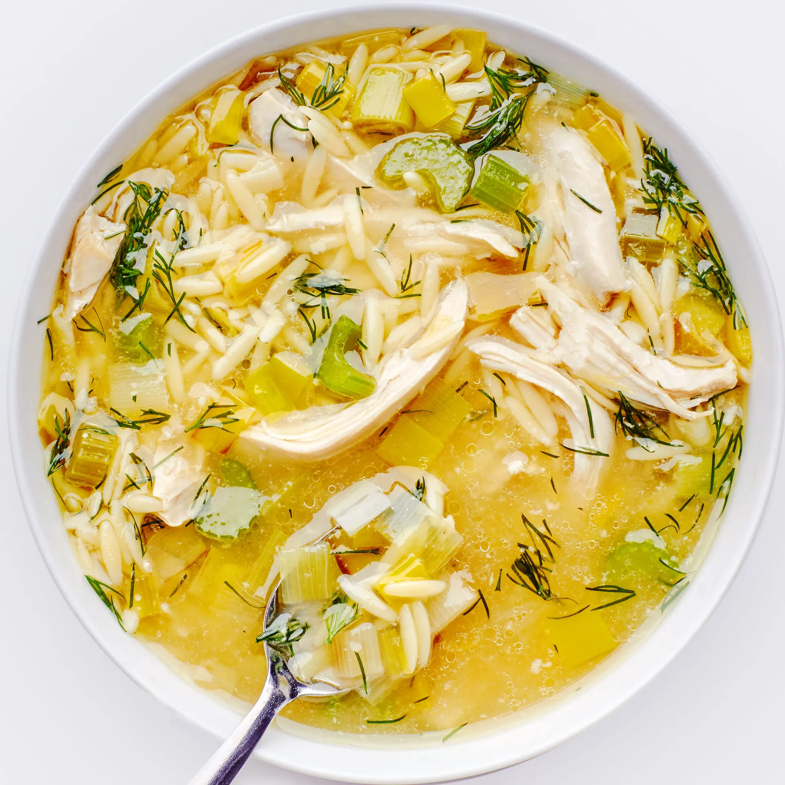

Lemony Chicken and Orzo Soup

A light bright soup that reminds one of warmer days. This dish
is still rich enough to stick to your ribs while providing
some refreshment anytime of day. I branch from the original
recipe to add some much needed flavor and savory qualities
that are quite simple. Browning the chicken and orzo then deglazing the
pan, adding additional aromatics, and livening the soup with
aleppo pepper flakes and fish sauce.
...Adapted from Bon Appetit
Ingredients
- 1 tablespoon olive oil
- 1 celery stalk
- 1 medium leek
- 3 cloves of garlic
- 1 lb bone-in chicken thighs
- 6 cups low-sodium chicken broth or better than bouillion stock
- pinch of aleppo pepper flakes or sweet italian pepper flakes
- Kosher salt and freshly ground pepper
- 1/2 orzo
- 1/4 chopped fresh dill
- 1 teaspoon fish sauce
- juice of 1 lemon plus more for serving
Steps
- Throughly season chicken on all sides.
Heat oil in a dutch oven over medium high heat. Brown
chicken skin until a deep sear is achieved, 5 to 7 minutes.
Remove from pot.
- Adding oil if necessary, saute leek and celery until soft,
5 to 8 minutes. Add chili flakes and garlic and saute until
fragrant, about 1 minute, stirring constantly. Return
chicken to pot and add broth. Bring to a boil and reduce to
a simmer until chicken is cooked through, about 15 minutes.
Remove chicken and shred when cool.
- Return the broth to a boil and cook orzo until al dente,
8-10 minutes.
- Remove pot from heat. Stir in chicken, dill, lemon juice,
and fish sauce. Serve with lemon wedges, extra dill, and
parmesan if desired.